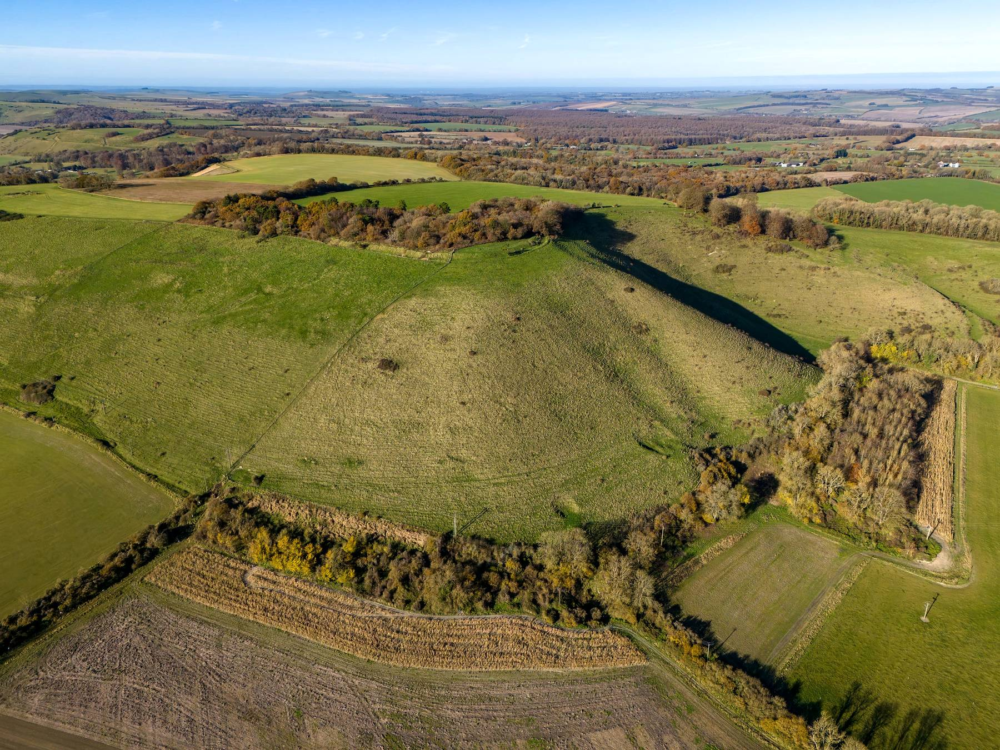

Get in touch
No forms, no inbox. Call us or write to us, and we will talk it through.
01 Contact
Call, write, or find us.
We do not publish an email address or opening hours. The quickest way to reach us is by phone.
24 Redland Lane, Westbury,
Wiltshire BA13 3QA
02 Found a cat?
If a cat is hurt or in danger.
Cats in Care is a small local charity, not an emergency service. For a cat that is sick, injured or in danger in England and Wales, the RSPCA asks you to ring:
RSPCA0300 123 8960If the cat is in a dangerous place, do not put yourself at risk trying to reach it. Number as published on the RSPCA’s own found a cat advice page.
Look for an owner
Many cats that look like strays have a home nearby. Ask your neighbours whether they recognise the cat.
Check for a microchip
A vet can scan a cat for a microchip and contact its owner. In England, owners must microchip cats older than 20 weeks.
If it is sick or injured
If you can do so safely, take the cat to a vet. If you cannot, ring the RSPCA on 0300 123 8960.
Then talk to us
If you think a cat is unwanted or has been abandoned, ring us on 07449 370133 and we will talk it through.